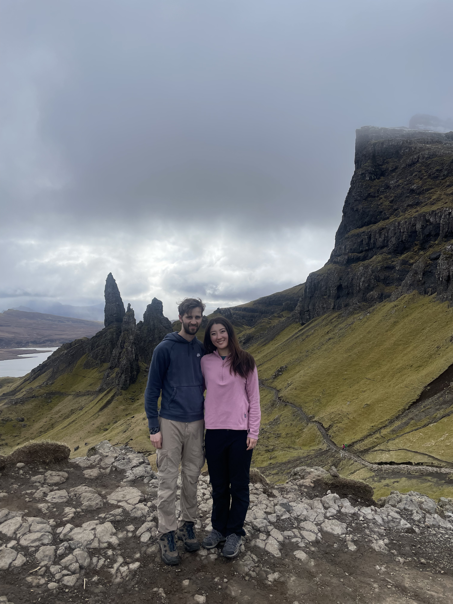
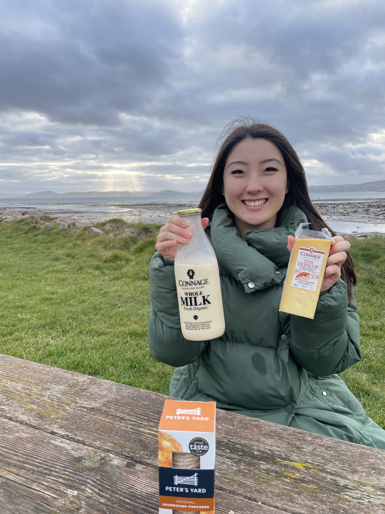

← Travel
Inverness 2025
To keep our 1 trip a month record alive for March we took off to Inverness in Scotland. Read on to find out if we spotted old Nessie in the famous Loch Ness...

15th March 2025
We arrived the night before and spoke to our host Jamie, who put fear into our hearts about driving outside Inverness. For good reason too, as our 2h car trip to the Isle of Skye was made up of curvy fast roads, often with only a single lane so that if another car approached it became a standoff until one car gave in and reversed back to the nearest passing lane. Despite this, we made it to the Isle of Skye in one piece.
We were rewarded with the fairytale like Eilean Donan Castle which was perched alone in the Loch Duich. The Isle of Skye is home to some wonderful places, including Portree, where we stopped off for a Scottish breakfast in front of colourful pastel houses and the highlight, which has a 400m vertical hike to an impressive rock formation known as the Old Man of Storr. We spent the rest of the day taking in the undulating green hills and the looming rock faces in the Isle of Skye. We got home exhausted after 10h of driving in the day with a nice pub dinner to top the day off

16th March 2025
In the morning we set sail onto Loch Ness in search of Nessie, the mythical beast which supposedly lives in the Loch's depths. To our surprise we were greeted with ... freezing cold winds and rain! Unfortunately, there was no sign of the Loch Ness monster although we saw locals taking a dip in the sub 5 degree water and fantastical castles lining the Loch's shore. We explored the centre of Inverness and discovered that a large part of the shops don't open on Sundays, oops. That theme continued when we tried to explore Fort George and the Culloden Battlefield expedition which were both closed at 3pm. Oops. Defeated we found a local farm selling fresh milk and cheese and made ourselves a picnic which we ate along the coast near Fort George with sheep and lambs alongside. What a pleasant way to end a hectic trip!